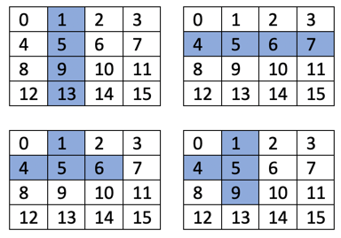

w14 <<
Previous Next >> About
w14 Tetris
Tetris in Brython
程式開發流程:
- 以 Leo Editor 開啟 tetris_project.leo
- 修改 w14_tetris_brython.py 節點中的內容
- 完成改版後, 點按 cp-to-txt 將程式內容複製到 w14_tetris_brython.txt
- 其中的 w14_tetris_brython.py 若採協同模式開發, 需處理內容衝突與合併
- 完成協同編輯後, 點按 cp-to-txt 將程式內容複製到 w14_tetris_brython.txt
- 後續的版本修改追蹤, 以 w14_tetris_brython.py 內容為主
- 動態與靜態網頁中的 Tetris, 則透過 w14_tetris_brython.txt, 以 Brython 環境執行
程式碼:
w14_tetris_brython.txt
leo_editor_cd2022_template.leo
tetris_project.leo (利用 Leo Editor 編輯 w14_tetris_brython.py, 且在改版後使用 @button 程式中的 shutil.copy() 讓 w14_tetris_brython.txt 內容同步)
圖形定義如下圖, 將各圖形及其旋轉組合, 以數列存放 (加入Z 字圖形將列為作業):
figures = [
[[1, 5, 9, 13], [4, 5, 6, 7]],
[[4, 5, 9, 10], [2, 6, 5, 9]],
[[6, 7, 9, 10], [1, 5, 6, 10]],
[[1, 2, 5, 9], [0, 4, 5, 6], [1, 5, 9, 8], [4, 5, 6, 10]],
[[1, 2, 6, 10], [5, 6, 7, 9], [2, 6, 10, 11], [3, 5, 6, 7]],
[[1, 4, 5, 6], [1, 4, 5, 9], [4, 5, 6, 9], [1, 5, 6, 9]],
[[1, 2, 5, 6]],
]

(Tetris_figure_definition.png from https://levelup.gitconnected.com/writing-tetris-in-python-2a16bddb5318)
The more interesting function is to check if the currently flying figure intersecting with something fixed on the field. This may happen when the figure is moving left, right, down, or rotating.
class Tetris:
...
def intersects(self):
intersection = False
for i in range(4):
for j in range(4):
if i * 4 + j in self.figure.image():
if i + self.figure.y > self.height - 1 or \
j + self.figure.x > self.width - 1 or \
j + self.figure.x < 0 or \
self.field[i + self.figure.y][j + self.figure.x] > 0:
intersection = True
return intersection
It is pretty simple: we go and check each cell in the 4x4 matrix of the current Figure, whether it is out of game bounds and whether it is touching some busy game field. We check if self.field[..][..] > 0, because there may be any color. And if there is a zero, that means that the field is empty, so there is no problem.
Having this function, we can now check if we are allowed to move or rotate the Figure. If it moves down and intersects, then this means we have reached the bottom, so we need to “freeze” the figure on our field:
class Tetris:
...
def freeze(self):
for i in range(4):
for j in range(4):
if i * 4 + j in self.figure.image():
self.field[i + self.figure.y][j + self.figure.x] = self.figure.color
self.break_lines()
self.new_figure()
if self.intersects():
game.state = "gameover"
After freezing, we have to check if there are some full horizontal lines that should be destroyed. Then we create a new Figure, and if it already intersects, then game over :)
Checking the full lines is relatively simple and straightforward, but pay attention to the fact that destroying a line goes from the bottom to the top:
class Tetris:
...
def break_lines(self):
lines = 0
for i in range(1, self.height):
zeros = 0
for j in range(self.width):
if self.field[i][j] == 0:
zeros += 1
if zeros == 0:
lines += 1
for i1 in range(i, 1, -1):
for j in range(self.width):
self.field[i1][j] = self.field[i1 - 1][j]
self.score += lines ** 2
Now, we are missing the moving methods:
class Tetris:
...
def go_space(self):
while not self.intersects():
self.figure.y += 1
self.figure.y -= 1
self.freeze()
def go_down(self):
self.figure.y += 1
if self.intersects():
self.figure.y -= 1
self.freeze()
def go_side(self, dx):
old_x = self.figure.x
self.figure.x += dx
if self.intersects():
self.figure.x = old_x
def rotate(self):
old_rotation = self.figure.rotation
self.figure.rotate()
if self.intersects():
self.figure.rotation = old_rotation
As you can see, thego_space method practically duplicates the go_down method, but it goes down until it reaches the bottom or some fixed figure.
And in every method, we remember the last position, change the coordinates, and check if there is an intersection. If there is, we return to the previous state.
w14 <<
Previous Next >> About